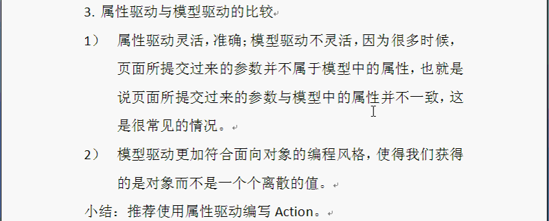
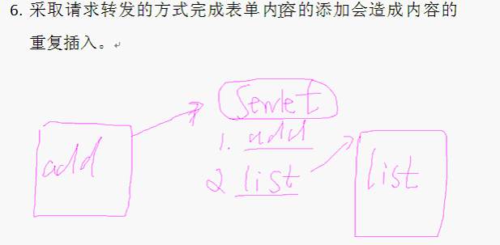
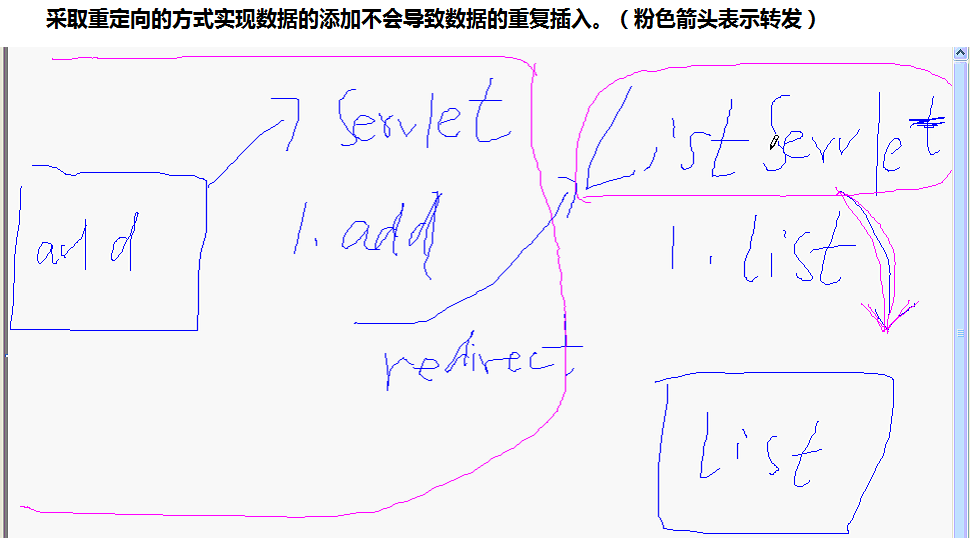

- 类型转换器：
- struts2可以使用内建的类型转换器实现自动的转化:对于8个原生数据类型以及Date,String等常见类型;
- 自己指定类型转换方式:对于自定义的对象类型来说;自定义类型转换器需要3个信息:
- Action的名字
- Action中待转换的属性名以及该属性对应的了类型转换器
- Action的名字是通过属性文件名来获得的，该属性对应的类型转换器是通过该key所对应的value来获得的,例如：配置识别User的属性文件UserAction-conversion.properties,在struts2包下，user=com.***.converter.UserConverter
- 实例：
import ognl.DefaultTypeConveerter
public class UserConverter extends DefaultTypeConverter{
public Object convertValue(Map context,Object value,Class toType){...} }
import com.opensymphony.xwork2.ActionSupport;
public class UserAction extends ActionSupport{...} - struts封装的转换器（对2的封装）：import org.apache.struts2.util.StrutsTypeConverter;
- 批量转换，页面form中有多个name="user"的input
- 全局转换：全局转换用的很少，在src目录下创建xwork-conversion.properties文件：待转换的类=转换器的名字；
- 问题：
- 问题1(可能不成立)：该部分实践过程中，经常出现“HTTP Status 404 - No result defined for action com.zhaohe.study.struts2.RegisterAction and result input”这种错误提示，
原因是在Action类中成员变量定义中有Date类型的变量，而jsp页面type="text"，导致无法解析，所以会出现以上问题。
解决办法：将input标签的type="date"(html5支持) - 问题2：一般当页面表单验证不通过时，也会出现问题1的提示；
解决办法：在struts.xml中配置input页面，通常指的就是原输入页面；
- 问题1(可能不成立)：该部分实践过程中，经常出现“HTTP Status 404 - No result defined for action com.zhaohe.study.struts2.RegisterAction and result input”这种错误提示，
- 声明：
- <%@ taglib prefix="s" uri="/struts-tags"%>//prefix什么都可以,常使用"s"
- <s:property value="user"/>
- execute()
- struts.xml文件中指定执行方法，也可以在在action标签中添加method=“myExecuteName”属性自定义execute；
- 但是实际开发过程不建议自定义execute，因为容易造成代码混乱；所以，在实际项目中，可以将不同的逻辑功能对应不同的Action，每个Action中都有struts自带的execute()方法;
- 输入校验validate()
- 输入校验:在Action中编写，因为ActionSupport中实现了校验接口，校验提示分为Action级别错误+Field级别错误
- （1）AddActionError()方法的实现：首先创建一个ArrayList对象，然后将错误信息添加到该ArrayList对象中；
（2）调用this.getActionErrors()方法返回Action级别的错误信息列表时，返回的实际上是集合的一个副本,因此对集合副本调用clear()方法清除的依旧是副本中的元素，原集合不受任何影响。即Action级别的错误信息列表对开发者来说是只读的。只有调用this.ClearActionErrors()才可以真正删除；
- AddFieldError()方法的实现：底层使用LinkedHashMap<String,List<String>>实现的，一个FieldName可以对应多条错误信息
- Action自定义方法对应的输入校验：自定义输入校验方法名和自定义execute方法名字是有关系的!!!:validateMyExecuteName()
- 自定义错误提示：
- 对应的配置文件位置：和Action在同级目录下，ActionName.properties(ActionName指的是对应的Action,固定的)
- 文件内容：invalid.fieldvalue（固定）.age（Actions.java中的属性字段）=提示信息（不需要加""）
- 执行顺序：先执行validateMyExecuteName()，然后执行validate(),然后自定义myExecuteName(),最后execute()
- 配置校验框架的xml配置文件:分为字段优先和校验器优先（可以混用）
- 字段优先：
- 文件位置和Action同级目录
- 名字为ActionName-validation.xml
- 校验器优先：
- 文件位置和Action同级目录
- 名字为ActionName-validation.xml
- 配置提示信息对国际化的支持：
- 配置package_zh_US.properties类似的属性文件，文件位置和Action同级目录
- 名字是有格式的，不能任意指定
- 可以通过在校验框架的配置文件中通过message元素的key="properties文件中的key"属性指定使用哪一种语言来提示
- 可能出现转换失败问题的问题：
- 对于输入的日期格式：中文默认为2015-12-2
- 但是对于英文格式为：12/2/2015
-
- 先转换
- 首先执行校验框架（xml文件）
- 执行自定义方法的校验方法（validateMyExecute()）
- 执行validate方法（推荐使用）
- 可能出现转换失败问题的问题：
- 对于输入的日期格式：中文默认为2015-12-2
- 但是对于英文格式为：12/2/2015
- 在struts.xml配置异常Bean和结果，
- 可以在Action中定义局部异常或结果，也可以在package中定义异常或者结果；但是局部优于全局
- 之前所学内容都是属性驱动，建议使用属性驱动
-

- 两种驱动方法都可以实现Preparable接口，作用是让Action完成一些初始化工作，这些工作是放在Preparable接口的prepare方法中完成的，该方法会在execute方法执行之前得到调用。
- Struts是基于Servlet的，但是对其进行了很好的封装：
- Struts有2种方法获取session信息：
- 真正的Session:
HttpServletRequest request=ServletActionContext.getRequest();
HttpSession session=request.getSession(); - Session底层维护的Map:线程安全的，每个Context都有自己的Session
ActionContext actionContext=ActionContext.getContext();
Map<String, Object> map=actionContext.getSession();
- 真正的Session:
- 服务器端代码的单元测试有2种模式：：
- 容器内测试:Jetty
Java代码中嵌入容器请求服务器创建Servlet对象 - Mock测试:
继承HttpServletRequest、HttpSession、HttpServletResponse等Servlet API
- 容器内测试:Jetty
- Struts2默认result-type name="dispatcher"
- struts.xml文件中 result中的参数<param name="username">${username}</param>类似这种只适合于重定向，对转发没有效果(即和请求转发没有任何关系)
- 
- 
- 通过重定向
- 通过Session Token（Session 令牌）：jsp页面必须使用struts2的标签库:
注意：<result name="invalid.token">/tokenFail.jsp</result>
页面表单隐藏域中存储令牌（随机数GUID，不变的），服务器端session中也保存着（彼此刷新随机数都会变化）
- 1).拦截器的配置：
- 编写拦截器类（拦截器类的定义）
- struts.xml中定义拦截器:
- 在struts-default.xml中定义了好多拦截器，可以通过配置name使用
- interceptor-stack标签用于组织拦截器，可包括拦截器或者其他的拦截器栈
- struts有默认的拦截器栈defaultStack，自定义拦截器后，必须将defaultStack放在最后，否则struts的部分功能可能无法使用。
- action中使用
- 2).拦截器类的定义方式：
- 实现Interceptor接口:
- void destroy()
- void init()
- public String intercept(ActionInvocation arg0)
- 继承AbstractInterceptor，该类实现了Interceptor接口:
- 空实现void destroy()
- 空实现void init()
- public abstract String intercept(ActionInvocation arg0)
- 方法过滤拦截器MethodFilterInterceptor:默认对execute进行拦截，拦截的方法还是执行的只不过拦截该方法的拦截器不执行；
具体应该拦截什么，由applyMethod()决定；- 成员变量：底层维护2个集合 protected Set<String> excludeMethods(includeMethods)=Collections.emptySet()空集合。
- abstract String doIntercept(ActionInvocation arg0)
- 实现Interceptor接口:
- 3).ActionInvocation的重要方法：
- String invoke()：调用下一个拦截器，如果没有则调用Action
- Object getAction()：获取关联的Action
- void addPreResultListener(PreResultListener obj):在Action执行之后和result之前执行，主要用于用过注册PreResultListener接口（观察者模式）监听一些额外的事情
- 4).ExecuteAndWaitInterceptor:
- 如果使用该拦截器，客户端请求服务器时会创建2个进程，一个后台进程用于执行Action，另一个进程用于监控Action是否执行完毕，如果未执行完，会请求wait.jsp页面；如果执行完了，请求success.jsp页面。
- 因为ExecuteAndWaitInterceptor之后的拦截器都不会执行，所以配置该拦截器时，配置信息要放到所有拦截器定义的最后一行。
- 注意：在wait.jsp页面中要配置该HTML标签(每隔5秒刷新，并且带有原来的所有请求参数，可选的值还有get,post)：
<meta http-equiv="refresh" content="5;url=>s:url includeParams="all"/>" /> - 可以使用Ajax技术替换，开发时用的不多。

...